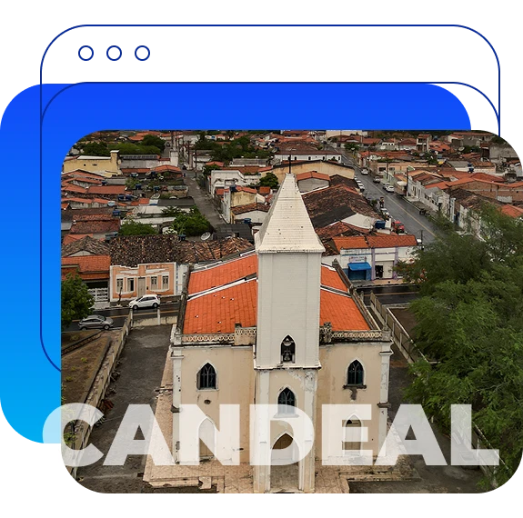
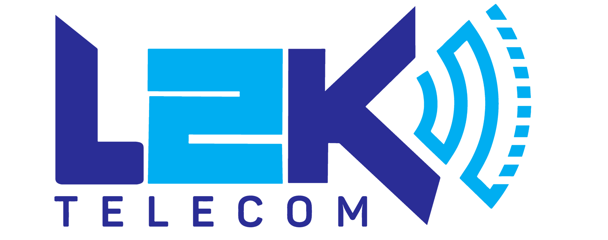
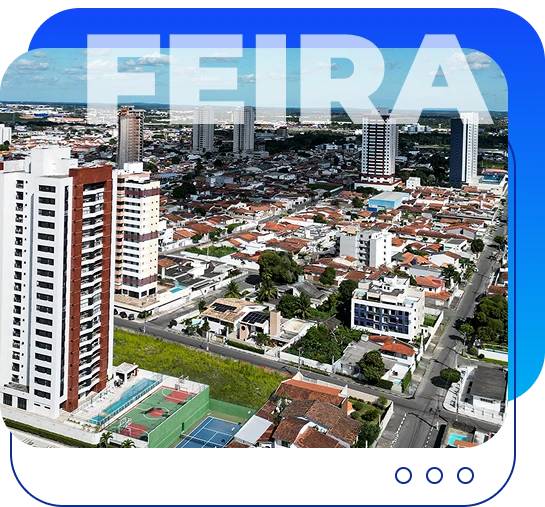
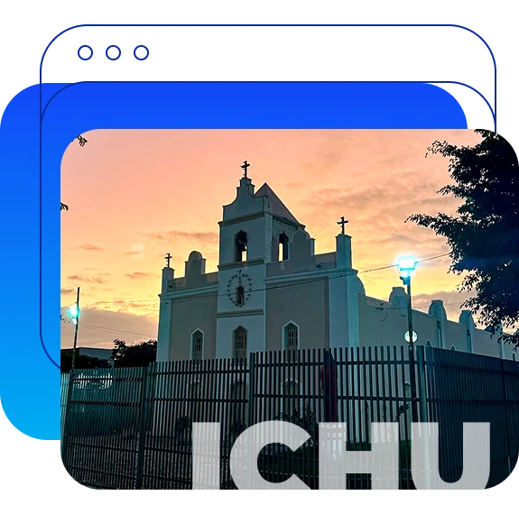
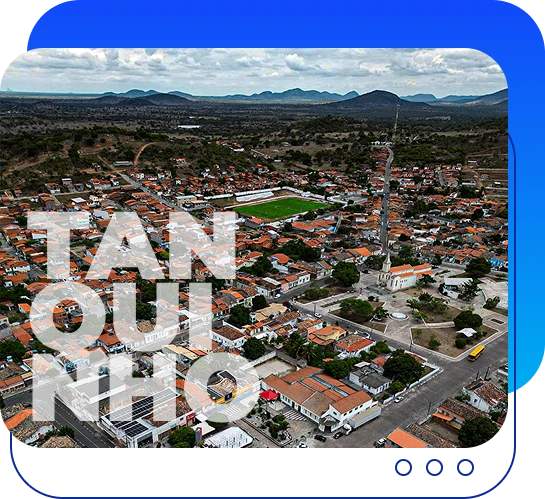
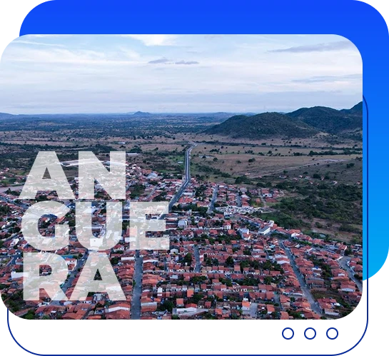
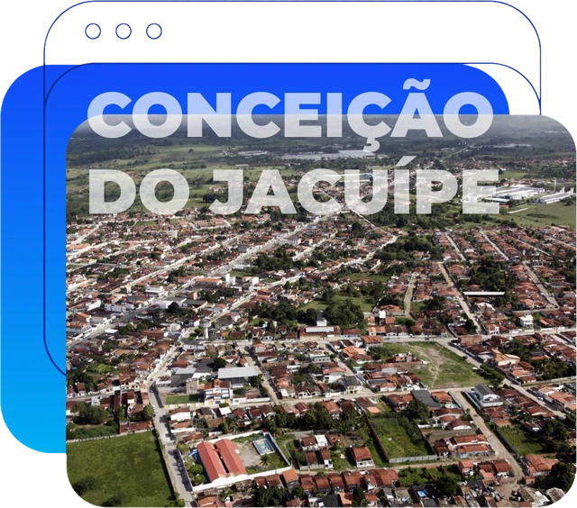

⌖
Atendimento regional
Candeal - BA
Candeal é sinônimo de acolhimento e tradição. A L2K está presente para levar conexão rápida, estável e atendimento próximo.
Cada cidade conta com um canal de atendimento específico. Escolha sua região e vá direto para a central correta.

6 regiõesAtendimento direcionadoWhatsApp e Central do Assinante certos para você resolver tudo com mais rapidez.

Candeal é sinônimo de acolhimento e tradição. A L2K está presente para levar conexão rápida, estável e atendimento próximo.

Na maior cidade do interior da Bahia, a L2K acompanha o ritmo de quem trabalha, estuda, empreende e precisa estar sempre conectado.

Em Ichu, a L2K conecta famílias, estudantes e negócios com internet confiável e atendimento que valoriza a proximidade.

Em Tanquinho, tecnologia e proximidade caminham juntas para facilitar o dia a dia de cada cliente L2K.

Em Anguera, a L2K leva internet de qualidade com o cuidado e a proximidade de um atendimento regional.

Em Conceição do Jacuípe, a L2K conecta tradição e futuro com uma rede preparada para acompanhar famílias e negócios.
Nossa central geral direciona seu atendimento para a equipe correta.